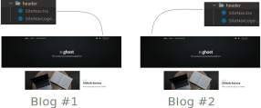
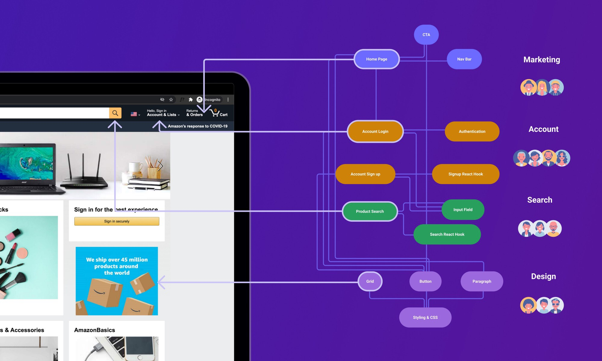

MicroFrontends using bit.dev
Matias Borghi - April 2021
Table of Contents
-
Monolithic frontends
- Status
- Pros & Cons
- Use Cases and the need for change
-
MicroFrontends
- Thinking about components
- Bit.dev usage
- Teams structure @ bit.dev
- Conclusion and current status
How did we start?
Pros
- All the code in the same place
- Quick to start developing and testing
Cons
- May lead to repetitive code usage which then turns into slow development
Use Cases
- Same-template blogs arose to repetitive (boring) code even for minor changes and bugs
- What happens if we want to implement multiple sites that use similar UI (headers, buttons, footers)?
We don't want to repeate the code and reinvent the wheel each time
Example: Spotify

Example: Finding a bug or wanting to do an improvement on a header
Example: Finding a bug or wanting to do an improvement on a header
Solution 💡
MicroFrontends using bit.dev
WebDev today allows us to think our app as a composition of reusable components.
Break monolithic project into smaller, more manageable pieces, which are independently developed and owned by different teams, with the power to build and ship simultaneously.
How does an example header could be decomposed?
...And a whole webpage?

So, how do we use it?
Just import the components!
Everyone works together, delivering independently.
Speed up development and improve application quality
~75% decrement in site building while keeping design consistent
Independently version, build, test, package and publish each of their components
All the components in one place

Example: Radio component

Development at bit.dev
| Team | Objective | Composition |
|---|---|---|
| Frontend infrastracture team | maintain bit.dev plataform's basic set of components | a designer, a PM and SH |
| Component Search team | responsible for complex search feature on bit.dev | a few devs, one NLP researcher and a PM |
| Component Discovery team | build the components used to document, visualize and interact with the components shared on the bit.dev platform | a part-time designer, part-time PM and a few devs |
Development at bit.dev
Conclusion
MicroFrontends is a better way to improve the way we work, build better modular software and deliver faster and more often
“ For small teams, adopting a flexible and scalable architecture will improve their ability to grow, rapidly add new features, onboard new people, and focus on core technology and innovation instead of on less important things. .”
Conclusion
Where are we now with all these?
Partial Migration Process🎥
Some components are already being imported from the UI library.